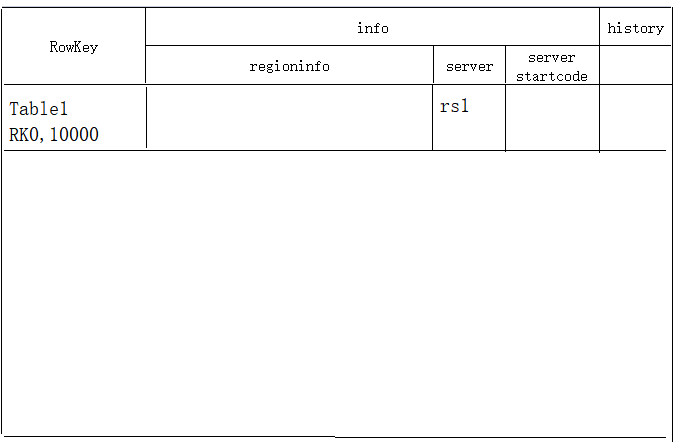
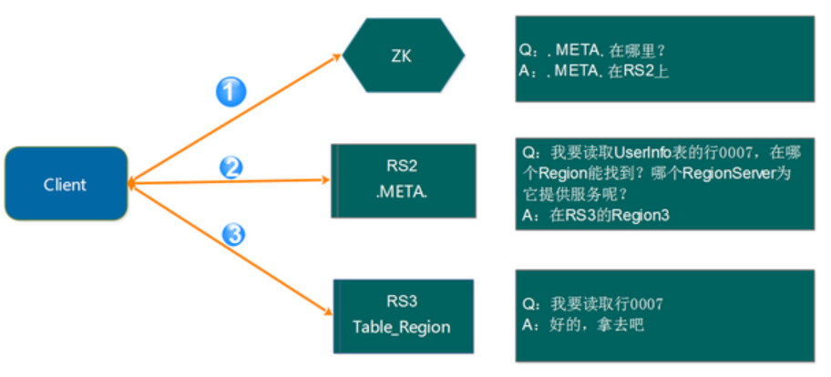
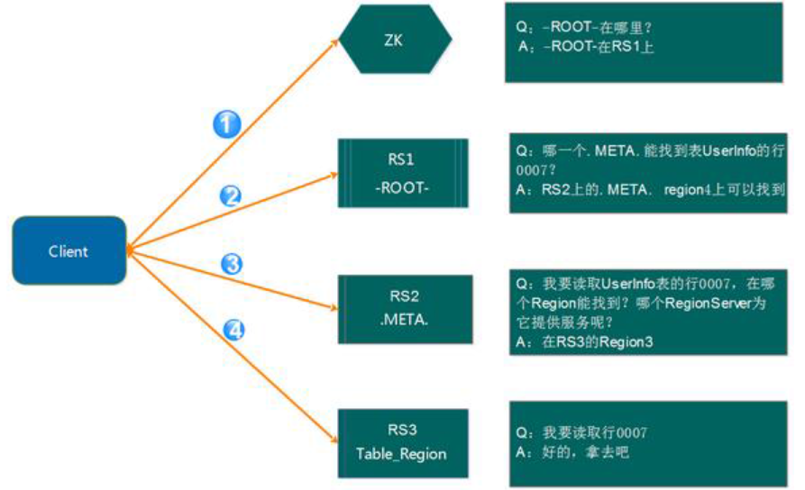
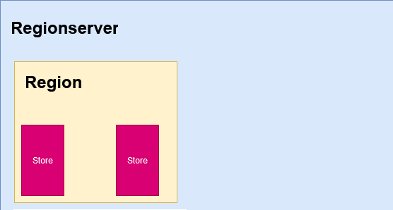
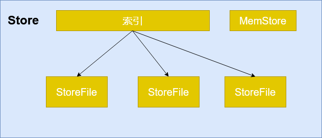
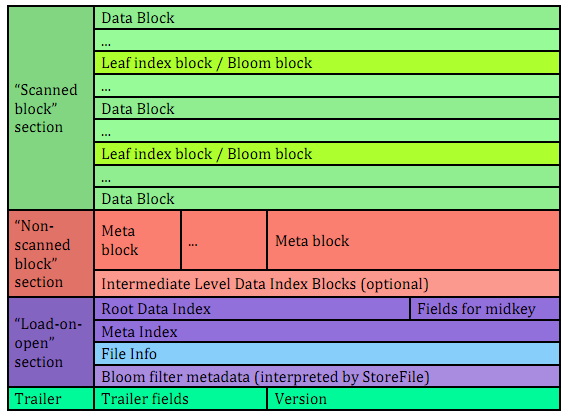
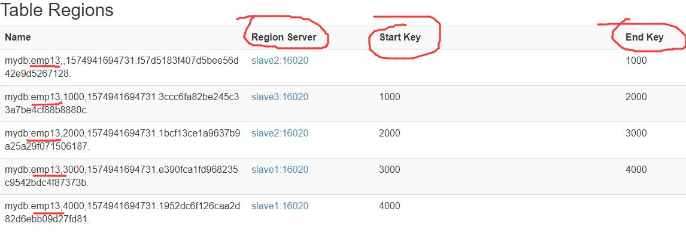
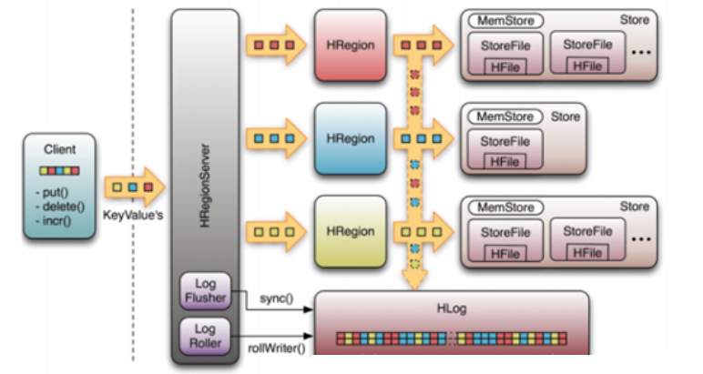
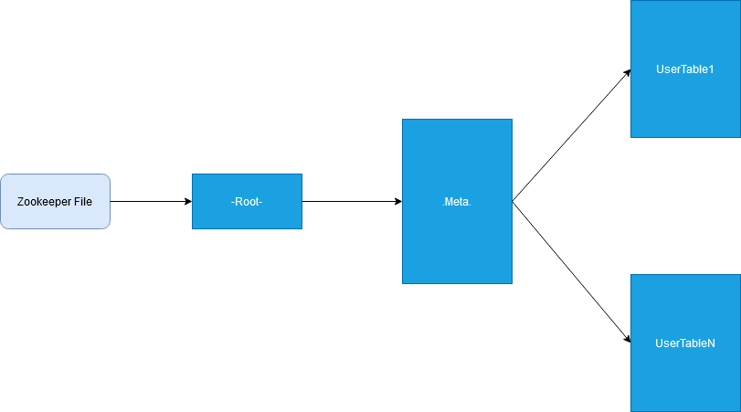

寻址机制
我们应该知道读写操作都在 RegionServer 上发生，而每个 RegionSever 为一定数量的 Region 服务，那么 Client 要对某一行数据做读写访问时，是如何知道具体要去访问哪个 RegionServer 呢？那就是接下来我们要讨论的问题
首先，我们要知道hbase:meta表的结构，有助于我们理解寻址过程。
meta表结构参考

新的寻址方式
1
2
3
| 在0.96版本以后，hbase直接将meta表所在的regionsServer信息存储在zk中的/hbase/meta-region-server中，之后又引用了namespace的概念，因此，meta表改成了hbase:meta。
如下图所示：
|

1
2
3
4
5
6
7
| #
第1步：Client请求ZooKeeper获取hbase:meta表所在的RegionServer的地址。
第2步：Client 请求hbase:meta表所在的RegionServer获取访问数据所在的RegionServer地址，Client会将hbase:meta表的相关信息cache下来，以便下一次快速访问。
第3步：Client请求数据所在的 RegionServer，获取所需要的数据。
|
老的寻址方式(参考)
在 0.96 版本以前，HBase 有两个特殊的表，分别是-ROOT-表和.META.表，其中-ROOT-的位置存储在ZooKeeper中，-ROOT-本身存储.META.表的 RegionInfo 信息，并且-ROOT不会分裂，只有一个 Region。而.META.表可以被切分成多个 Region。
1
2
| 寻找流程：client -> -root-表 -> .meta.表 -> region
也被称之为三层跳转。
|
root表结构参考：

具体的寻址流程如下图所示：

1
2
3
4
5
6
7
| 第 1 步：Client 请求 ZooKeeper 获得-ROOT-所在的 RegionServer 地址
第 2 步：Client 请求-ROOT-所在的 RS 地址，获取.META.表的地址，Client 会将-ROOT-的相关 信息 cache 下来，以便下一次快速访问
第 3 步：Client 请求.META.表的 RegionServer 地址，获取访问数据所在 RegionServer 的地址， Client 会将.META.的相关信息 cache 下来，以便下一次快速访问
第 4 步：Client 请求访问数据所在 RegionServer 的地址，获取对应的数据
|
从上面的路径我们可以看出，用户需要 3 次请求才能到达用户 Table 真正的位置(具体的region)，这在一定程度上，性能明显下降。在 0.96 之前使用 3 层设计的主要原因是考虑到元数据可能需要很大。但是真正集群运行，元数据的大小其实很容易计算出来。在 BigTable 的论文中，每行 METADATA 数据存储大小为 1KB 左右，如果按照一个 Region 为 128M 的计算，3 层设计可以支持的 Region 个数为 2^34 个，采用 2 层设计可以支持 2^17（131072）。那么 2 层设计的情 况下一个集群可以存储 4P 的数据。这仅仅是一个 Region 只有 128M 的情况下。如果是 10G 呢? 因此，通过计算，其实 2 层设计就可以满足集群的需求。因此在 0.96 版本以后就去掉 了-ROOT-表了。
总结
1
2
3
4
5
6
| 总结去掉-ROOT-的原因有如下 2 点：
其一：提高性能
其二：2 层结构已经足以满足集群的需求
这里还有一个问题需要说明，那就是 Client 会缓存.META.的数据，用来加快访问，既然有缓存，那它什么时候更新？如果.META.更新了，比如 Region1 不在 RerverServer2 上了，被转移 到了 RerverServer3 上。Client 的缓存没有更新会有什么情况？
其实，Client 的元数据缓存不更新，当.META.的数据发生更新。如上面的例子，由于 Region1 的位置发生了变化，Client 再次根据缓存去访问的时候，会出现错误，当出现异常达到重试 次数后就会去.META.所在的 RegionServer 获取最新的数据，如果.META.所在的 RegionServer 也变了，Client 就会去 ZooKeeper 上获取.META.所在的 RegionServer 的最新地址。
|
存储机制
存储模型

1
2
3
4
5
6
7
8
9
10
11
12
13
14
15
16
17
18
19
20
| 1. 数据的存储是每个Region所承担的工作了
1) 我们知道一个Region代表的是一张 Hbase表中特定Rowkey范围内的数据，
2) 而Hbase是面向列存储的数据库，所以在一个Region中，有多个文件来存储这些列。
3) Hbase中数据列是由列簇来组织的，所以每一个列簇都会有对应的一个数据结构，
3.1) Hbase将列簇的存储数据结构抽象为Store，一个Store代表一个列簇。
总结：所以在这里也可以看出为什么在我们查询的时候要尽量减少不需要的列，而经常一起查询的列要组织到一个列簇里：因为要需要查询的列簇越多，意味着要扫描越多的Store文件，这就需要越多的时间
2. Store中存储数据的方式:Hbase采用的是LSM树的结构，这种结构的关键是:
1) 每一次的插入操作都会先进入MemStore（内存缓冲区），
2) 当 MemStore达到上限的时候，Hbase会将内存中的数据输出为有序的StoreFile文件数据（根据Rowkey、版本、列名排序，这里已经和列簇无关了因为Store里都属于同一个列簇）。
3) 这样会在Store中形成很多个小的StoreFile，当这些小的File数量达到一个阀值的时 候，Hbase会用一个线程来把这些小File合并成一个大的File。这样，Hbase就把效率低下的文件中的插入、移动操作转变成了单纯的文件输出、 合并操作。
由上可知，在Hbase底层的Store数据结构中，
1） 每个StoreFile内的数据是有序的，
2） 但是StoreFile之间不一定是有序的，
3） Store只需要管理StoreFile的索引就可以了。
这里也可以看出为什么指定版本和Rowkey可以加强查询的效率，因为指定版本和Rowkey的查询可以利用 StoreFile的索引跳过一些肯定不包含目标数据的数据。
|

两种文件类型
HBase中的所有数据文件都存储在Hadoop HDFS文件系统上，主要包括两种文件类型:
1）HFile(storefile)
HFile是HBase的数据存储的实际载体，从体系结构中我们也能看出，Hbase不直接与磁盘进行交互，而是通过调用HDFS的client接口，由HDFS进行存储的。
1
| 网上资料上也有不少人管HFile叫storefile的，其实这么叫也是没有错的。HFile在Hadoop中是一种二进制格式文件，它模仿了BigTable中的SSTable格式(参考下图)。实际上StoreFile就是对HFile做了轻量级包装,进行数据的存储。Hbase是基于java编写得，那么所有物理上得东西，在java程序运行时，都有一个对象与之对应，在物理存储上我们管StoreFile刷写而成得文件叫HFile,StoreFile是HFile得抽象类而已。
|

2）HLog File
HBase中采用WAL(Write Ahead Log)的存储格式，物理上是Hadoop的SequenceFile。在写数据时会先往Hlog写一份，然后往内存写，以避免内存丢失数据，可以从日志文件中恢复Hlog记录数据的所有变更，
1
| 每个HRegionServer维护一个HLog，而不是每个HRegion一个。这样不同region（来自不同table）的日志会混在一起，这样做的目的是不断追加单个文件相对于同时写多个文件而言，可以减少磁盘寻址次数，因此可以提高对table的写性能。带来的麻烦是，如果一台HRegionServer下线，为了恢复其上的region，需要将HRegionServer上的log进行拆分，然后分发到其它HRegionServer上进行恢复。
|
Flush与Compact、Split
1
2
3
4
5
6
7
8
9
10
| - 1. Flush
客户端的数据会写入内存，一直到MemStore满了或者达到其他flush条件时，会将MemStore中的数据Flush成
一个StoreFile
- 2. Compact
当storefile的数量越来越多，增长到数量阈值时，会触发Compact合并操作多个StoreFile合并成一个
StoreFile，同时进行版本合并和数据删除
- 3. Split
由于合并操作，当单个StoreFile大小超过一定阈值后，这样会触发Region Split操作。实际上是新生成两个
Region来管理维护旧的Region中的数据，旧的Region会下线，新的两个Region会被HMaster重新分配到相应
的HRegionServer上，这样使得原先1个Region的压力得以分流到2个Region上。
|
增删改查的真正面目
Hbase是一个可以随机读写的数据，而它是基于HDFS的，HDFS的特点是只能新增，要么整个删除，不能修改。那么HDFS是如何实现我们的增删改查的呢。实际上Hbase几乎总是在做新增操作。
1
2
3
4
5
| - 新增单元格数据时，在HDFS上新增一条记录
- 修改一个单元格时，也是新增一条记录，只是版本号比之前大了。
- 删除时，还是新增一条记录，只不过没有value值，类型为DELETE。
为了提高性能，Hbase每间隔一段时间或者文件大小达到阀值后，都会进行一次合并，合并的对象就是HFile文件。当合并成一个HFile时，会忽略掉DELETE类型的记录，从而达到了删除的目的，并对剩下的数据做排序和版本合并。形成一个大的HFile，当Hfile的大小达到需要切分的阀值时，会等分为两个HFile...
|
Region的管理
一张表的数据可能只有一个region，也可能有多个region。当一个region的数据越来越大时，regionserver会进行split策略，将一个region的数据，切分成两个region，这个旧的region会下线，两个新的region由hmaster来重新分配regionserver进行管理，尽可能的做到集群的负载均衡。
在管理region时，我们也可以通过建表的预分区和手动操作来进行管理region
预分区
每一个region都维护着startRow与endRowKey，如果加入的数据符合某个region维护的rowKey范围，则该数据交给这个region维护。那么依照这个原则，我们可以将数据所要投放的分区提前大致的规划好，以提高HBase性能。
1
| hbase(main):050:0> create 'mydb:emp13','base_info',SPLITS=>['1000','2000','3000','4000']
|

我们可以插入下面五条数据，就会进入不同的region里
1
2
3
4
5
6
7
8
9
10
11
| hbase(main):050:0>put 'mydb:emp13','0001','base_info:name','zhangsan'
hbase(main):051:0>put 'mydb:emp13','1001','base_info:name','lisi'
hbase(main):052:0>put 'mydb:emp13','2001','base_info:name','wangwu'
hbase(main):053:0>put 'mydb:emp13','3001','base_info:name','zhaoliu'
hbase(main):054:0>put 'mydb:emp13','4001','base_info:name','xiaoqi'
hbase(main):050:0>flush 'mydb:emp13'#手动flush到hdfs中
flush语法：
hbase> flush 'TABLENAME'
hbase> flush 'REGIONNAME'
hbase> flush 'ENCODED_REGIONNAME'
|
手动管理
1) 切分region
1
2
3
4
5
6
7
8
| split 'tableName'
split 'namespace:tableName'
split 'regionName'
split 'tableName', 'splitKey'
split 'regionName', 'splitKey'
eg.
hbase(main):064:0> split 'mydb:emp13,4000,1574941694731.1952dc6f126caa2d82d6ebb09d27fd81.','5000'
|
2) 合并region
1
2
| hbase> merge_region 'ENCODED_REGIONNAME', 'ENCODED_REGIONNAME'
hbase> merge_region 'ENCODED_REGIONNAME', 'ENCODED_REGIONNAME', true
|
读写流程
写数据流程

1
2
3
4
5
| 1. HBase使用memstore和storefile存储对表的更新。数据在更新时首先写入hlog和memstore，memstore中的数据是排序的，当memstore累计到一定的阀值时，就会创建一个新的memstore，并将老的memstore添加到flush队列，由单独的线程flush到磁盘上，成为一个storefile。与此同时，系统会在zookeeper中记录一个checkpoint，表示这个时刻之前的数据变更已经持久化了。当系统出现意外时，可能导致memstore中的数据丢失，此时使用hlog来恢复checkpoint之后的数据。
2. Storefile是只读的，一旦创建之后就不可修改。因此hbase的更新就是不断追加的操作。当一个store的storefile达到一定的阀值后，就会进行一次合并操作，将对同一个key的修改合并到一起，同时进行版本合并和数据删除，形成一个大的storefile。当storefile的大小达到一定的阀值后，又会对storefile进行切分操作，等分为两个storefile。
3. Hbase中只有增添数据，所有的更新和删除操作都是在后续的合并中进行的，使得用户的写操作只要进入内存就可以立刻返回，实现了hbase的高速存储。
|
具体写流程：
1
2
3
4
5
6
| (1) Client通过Zookeeper的调度，向RegionServer发出写数据请求，在Region中写数据。
(2) 数据被写入Region的MemStore，直到MemStore达到预设阈值。
(3) MemStore中的数据被Flush成一个StoreFile。
(4) 随着StoreFile文件的不断增多，当其数量增长到一定阈值后，触发Compact合并操作，将多个StoreFile合并成一个StoreFile，同时进行版本合并和数据删除。
(5) StoreFiles通过不断的Compact合并操作，逐步形成越来越大的StoreFile。
(6) 单个StoreFile大小超过一定阈值后，触发Split操作，把当前Region Split成2个新的Region。父Region会下线，新Split出的2个子Region会被HMaster分配到相应的RegionServer上，使得原先1个Region的压力得以分流到2个Region上。
|
读数据流程(HBase1.0之前)

1
2
3
4
5
6
7
8
9
10
| Hbase的所有region元数据被存储在.META表中，随着region的增多，.META表中的数据也会增大，并分裂成多个新的region。为了定位.META表中各个region的位置，把.META表中的所有region的元数据保存在-ROOT-表中(1.0之后转移到zk的master目录)，最后由zookeeper记录-ROOT-表的位置信息。所有的客户端访问数据之前，需要首先访问zookeeper获取-ROOT-的位置，然后访问-ROOT-表获得.META表的位置，最后根据.META表中的信息确定用户数据存放的位置。
-ROOT-表永远不会被分割，它只有一个region，这样可以保证最多只需要三次跳转就可以定位任意一个region。为了加快访问速度，.META表的所有region全部保存在内存中。客户端会将查询过的位置信息缓存起来，且缓存不会主动失效。如果客户端根据缓存信息还访问不到数据，则询问相关.META表的region服务器，试图获取数据的位置，如果还是失败，则询问-ROOT-表相关的.META表在哪里。最后，如果前面的信息全部失效，则通过zookeeper重新定位region的信息。所以如果客户端上的缓存全部失效，则需要进行6次网络来定位，才能定位到正确的region。
client-->Zookeeper-->-ROOT-表（master）-->.META.表-->RegionServer-->Region-->client
(1) Client访问Zookeeper，查找-ROOT-表，获取.META.表信息。
(2) 从.META.表查找，获取存放目标数据的Region信息，从而找到对应的RegionServer。
(3) 通过RegionServer获取需要查找的数据。
(4) Regionserver的内存分为MemStore和BlockCache两部分，MemStore主要用于写数据，BlockCache主要用于读数据。读请求先到MemStore中查数据，然后在到BlockCache中查，最后再到StoreFile上读，并把读的结果放入BlockCache，
|

This is copyright.